Flow EHIS ngày 11/11/2026
Ảnh giao diện thật · Firebase local · Dữ liệu/vị trí giả · Mobile web 390×844, desktop 1280×900. Không phải nghiệm thu APK/âm thanh/GPS thật.
01 · Đăng nhập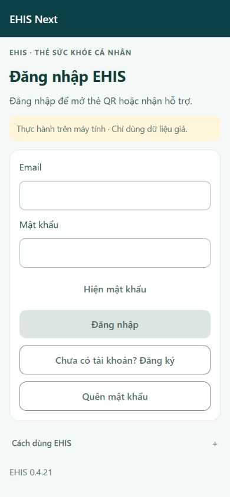
02 · Chọn đối tượng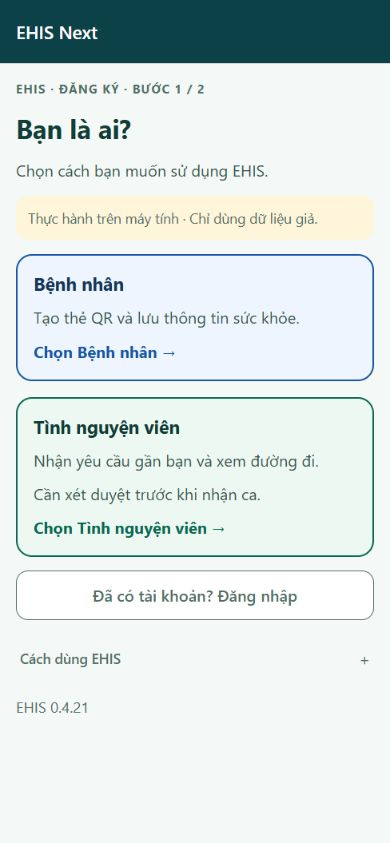
03 · Đăng ký bệnh nhân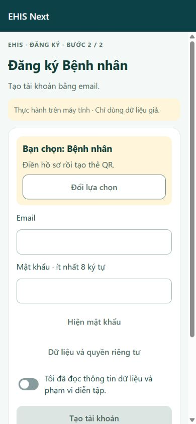
04 · Hồ sơ bệnh nhân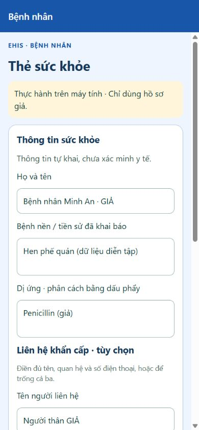
05 · Thẻ QR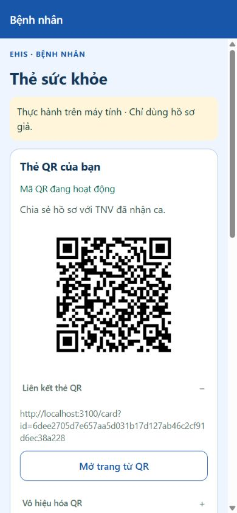
06 · Xác nhận vị trí giả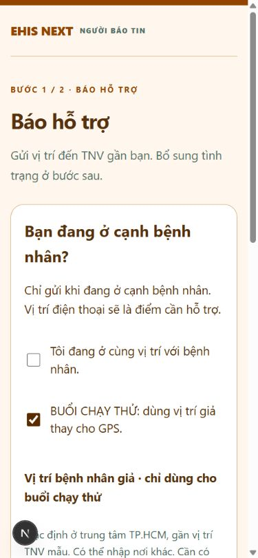
07 · Hồ sơ TNV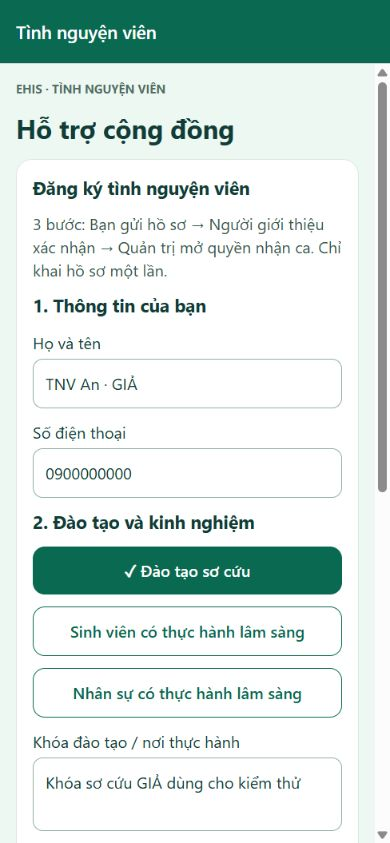
08 · Chờ người giới thiệu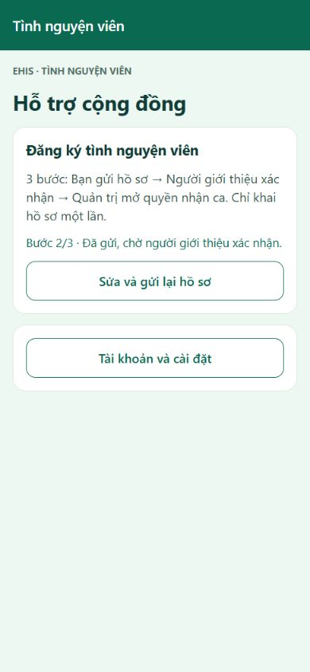
09 · Checklist người giới thiệu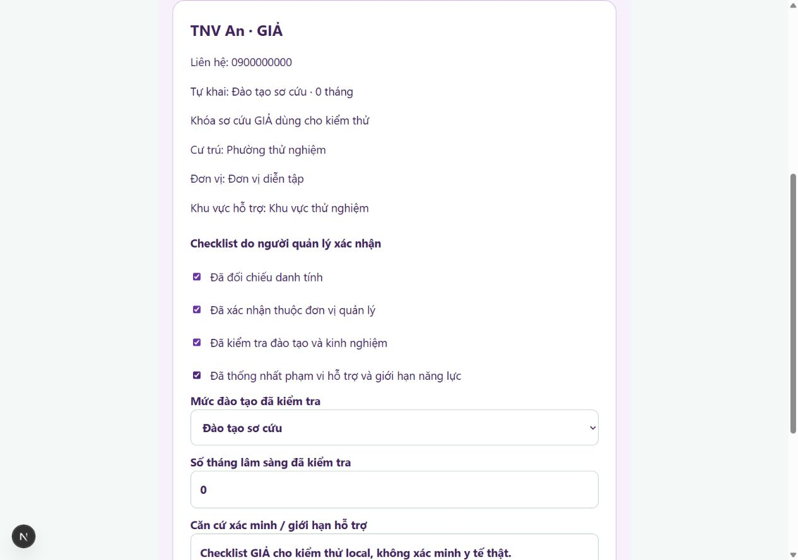
10 · Quản trị xét duyệt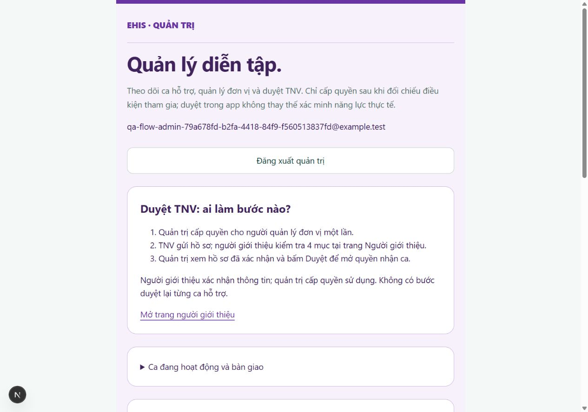
11 · TNV sẵn sàng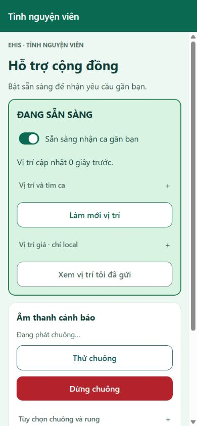
12 · Bảng hỏi người báo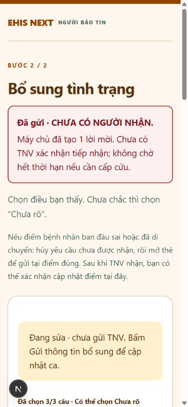
13 · Cảnh báo ca mới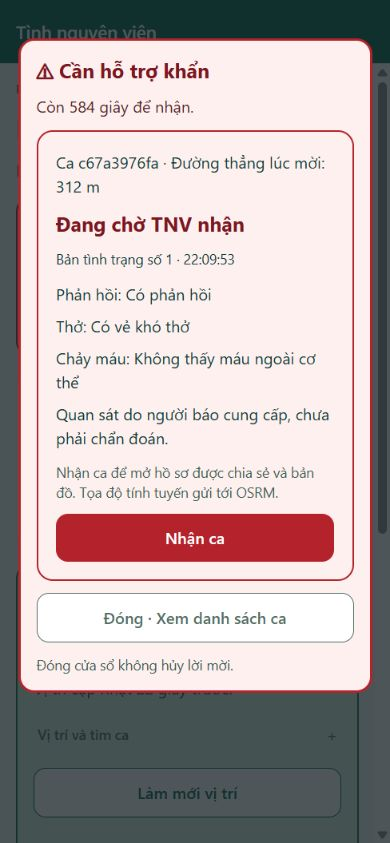
14 · Tiến độ lên đường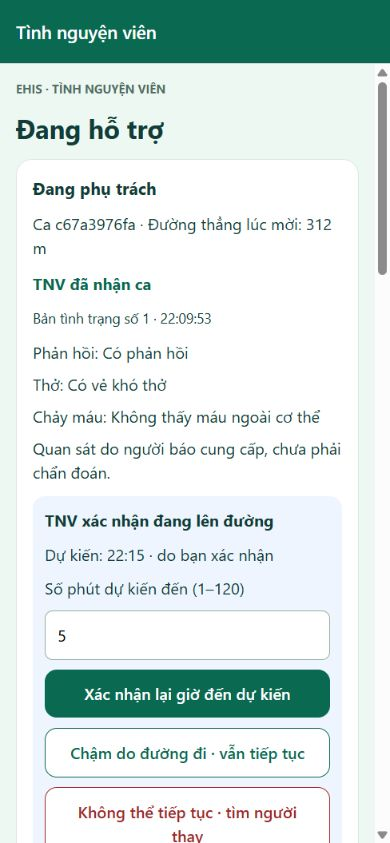
15 · Hồ sơ được chia sẻ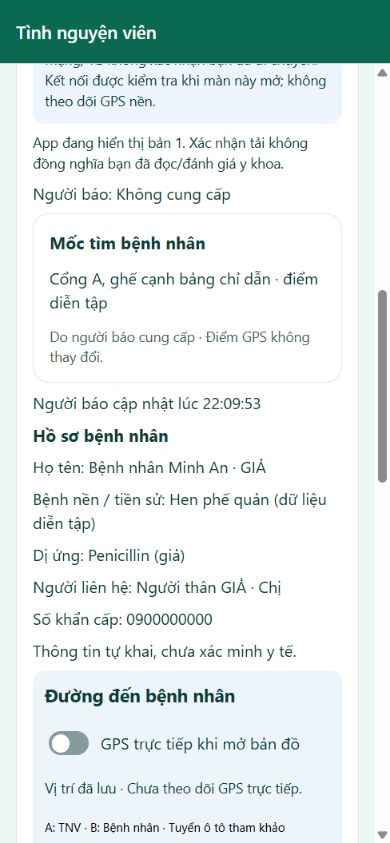
16 · Bản đồ và tuyến đường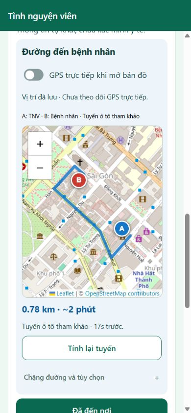
17 · Lời mời bàn giao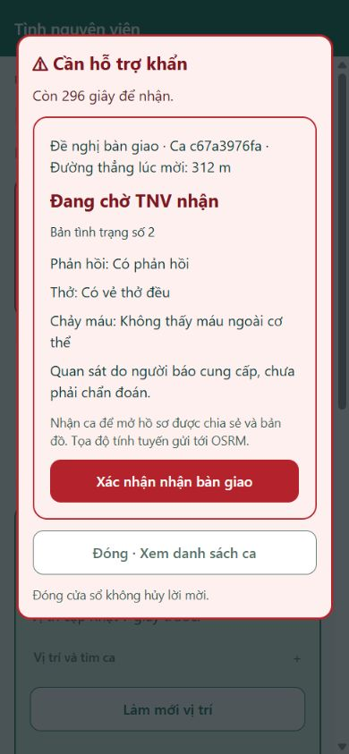
18 · Xác nhận hoàn tất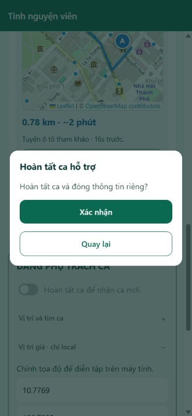
19 · Người báo thấy kết thúc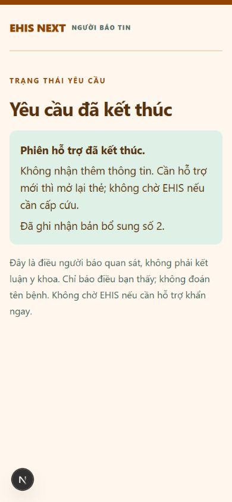
20 · Người cũ được giải phóng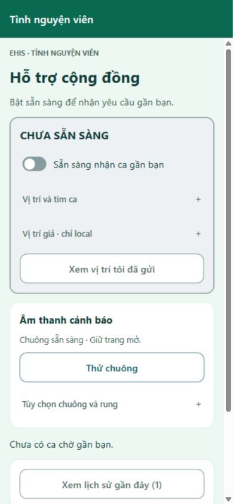